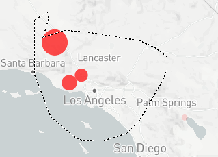
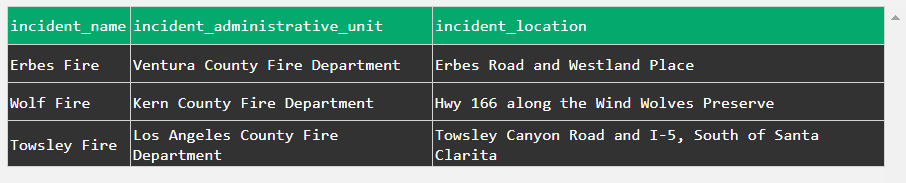

California Incident Map¶
This service provides tools for the user to inspect location of incidents on a California Map. It is recommended to use a small date range for full functionality. This is a data visualization tool and hence depends only on the data set and not rely on any backend functionality.
How to use¶
The first is the filter, where you selection the time of interest to see california wide fire incidents. You can zoom in on the map, and use provided tools like lasso to select a certain are and then see the incidents in a dataframe.
For example, if one selects the range of inspection as the whole month of January 2021 and decides to inspect the LA and Santa Barbara area, we see on the map the fire incidents. 
{kind=link}
Dashboard elements and the functions used¶
There are two dashboard elements in this tool- 1. Wildfires Incident Map 2. Dataframe with additional information.
1. Wildfires Incident Map¶
The first thing you see on this page is the map of california indicating the fires that are happening. Note- The scatter plot seen on the map is representative of relative intensity of the fires.
1.1 Update_cali_map¶
When you hover over a particular fire, you can also visually see some statistics about the fire such as acres burned , latitude and longitude. This is done with the help of this function. Below is the function signature.
2. Dataframe with additional information¶
Continuing our example, when we select LA - Santa Barbara area for the month of January,2021 the dataframe observed is- 
{kind=link}
2.1 Display_data¶
If we use the Box Select or the Lasso tool to select a particular area on the california map, then we get more information such as Incident Name , Incident administrative unit , Incident location for all the fires in the selected area.